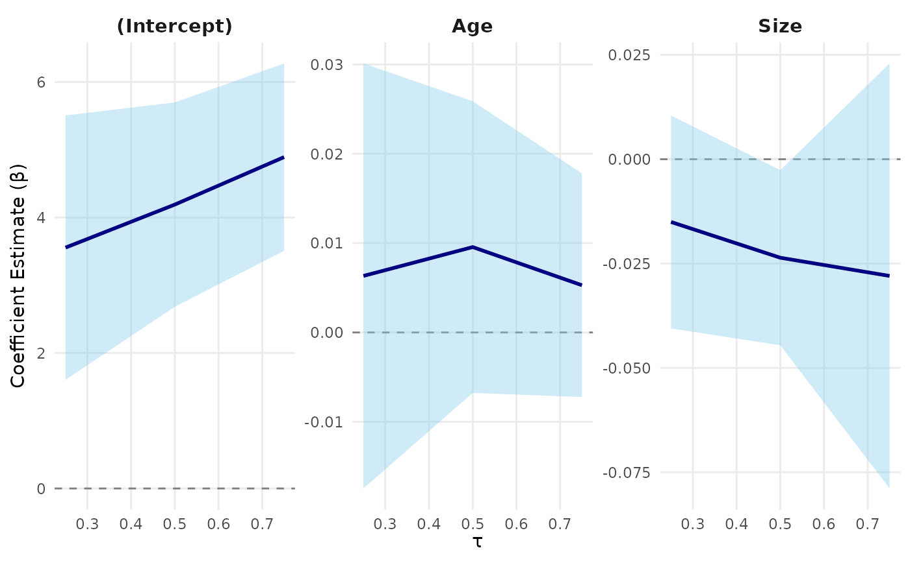

curequantile: An R Package for Quantile Cure Regression Models
Source:vignettes/curequantile.Rmd
curequantile.RmdThe curequantile package can be used to fit quantile
regression model for censored time-to-event data with a cure
fraction.
To illustrate the functionality of the curequantile
package, we first load the necessary libraries and the
breast_data dataset. The data consist of 462 women from
county code 175 (Union of Iowa, Morgan of Kentucky, and Laurens of
Georgia) diagnosed with localized or regional breast cancer between 2004
and 2017, extracted from the Surveillance, Epidemiology, and End Results
(SEER) database.
library(curequantile)
library(survival)
library(maxLik)
#> Loading required package: miscTools
#>
#> Please cite the 'maxLik' package as:
#> Henningsen, Arne and Toomet, Ott (2011). maxLik: A package for maximum likelihood estimation in R. Computational Statistics 26(3), 443-458. DOI 10.1007/s00180-010-0217-1.
#>
#> If you have questions, suggestions, or comments regarding the 'maxLik' package, please use its GitHub page and the issues there:
#> https://github.com/arne-henningsen/maxLik
data("breast_data")
head(breast_data)
#> Time Delta Age Size Surgery ER PR
#> 1 83 0 74 9 1 0 0
#> 2 37 0 69 13 1 1 1
#> 3 46 0 71 23 1 0 0
#> 4 26 0 61 10 1 0 0
#> 5 117 0 58 13 1 1 1
#> 6 114 0 60 21 1 1 0A cure quantile regression model can be fit using the
curequantile function.
fit_breast <- curequantile(Surv(log(Time), Delta) ~ Age + Size,
data = breast_data, subset = 1:200)The coef() function extracts the parameter estimates at
a specific quantile tau.
coefficients <- coef(fit_breast, tau = 0.50)
names(coefficients)
#> [1] "gamma_est" "eta_est" "beta_est"
coefficients$gamma_est
#> (Intercept) Age Size
#> -4.41474767 0.03760906 0.03203235
coefficients$beta_est
#> (Intercept) Age Size
#> 4.19057671 0.00955579 -0.02360217Here, gamma_est contains the incidence parameter
estimates, while beta_est contains the latency parameter
estimates at the specified quantile, tau. Finally,
eta_est gives the conditional probabilities of being
susceptible, and therefore has a length equal to the number of rows in
the input data frame.
Alternatively, print() prints the coefficients at the
user-specified quantile tau to the console.
print(fit_breast, tau = 0.50)
#> (Intercept) Age Size
#> gamma -4.414748 0.037609 0.032032
#> beta 4.190577 0.009556 -0.023602The summary() function returns the parameter estimates,
bootstrap standard errors,
-test
statistics,
-values,
and bootstrap confidence intervals for both the incidence covariates and
the latency covariates at the specified quantile, tau. For
computational speed, this vignette uses b = 5 bootstrap
resamples, whereas the function defaults to b = 200.
summary <- summary(fit_breast, tau = 0.50, b = 5)
#> Warning in colnames(gamma_hat)[1:4] <- c("gamma_est", "gamma_se", "Z",
#> "Pvalue", : number of items to replace is not a multiple of replacement lengthThe plot() function displays the quantile parameter
estimates for latency and their corresponding confidence intervals for
each covariate across the user-specified range of tau. For
illustration, only b = 10 bootstrap resamples are used here.

Additional S3 methods available for curequantile objects
include:
-
dim(): Returns the number of observations along with the number of incidence and latency covariates. -
formula(): Extracts the model formula. -
logLik(): Returns the log-likelihood of the fitted model. -
nobs(): Returns the number of observations used to fit the model. -
predict(): Generates predictions from the fitted model.